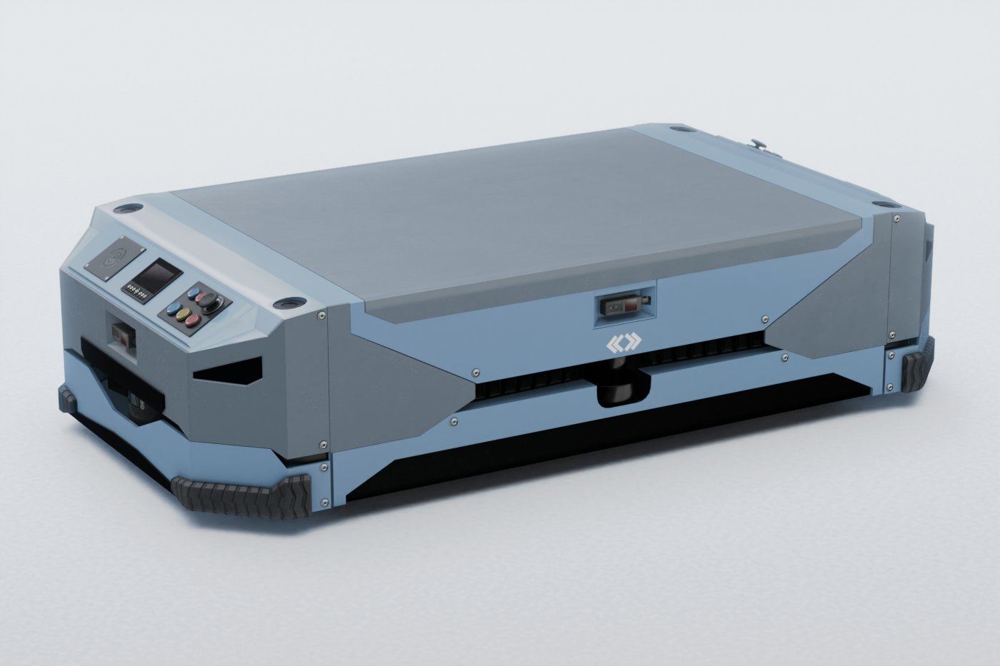
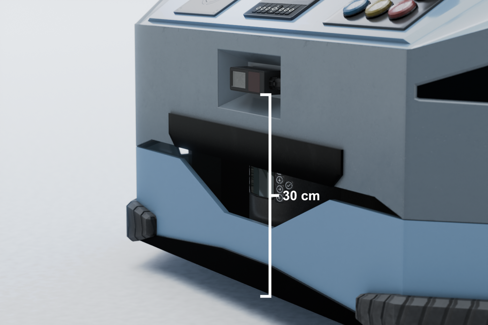
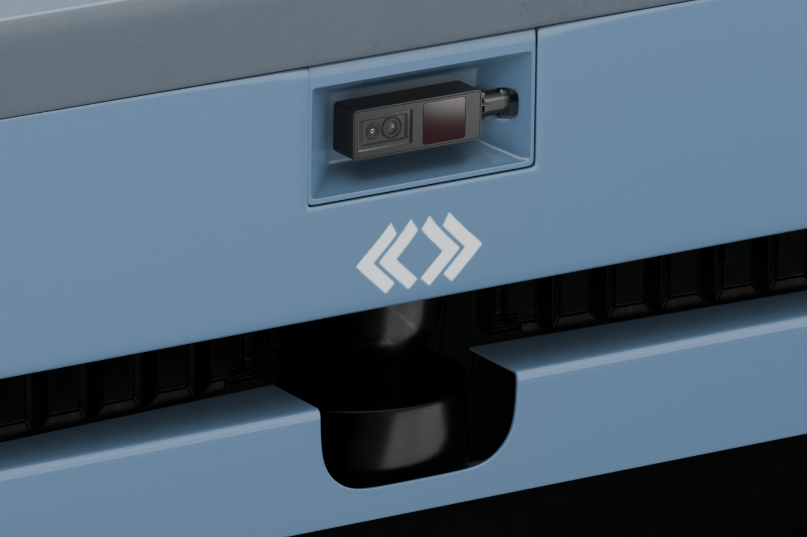
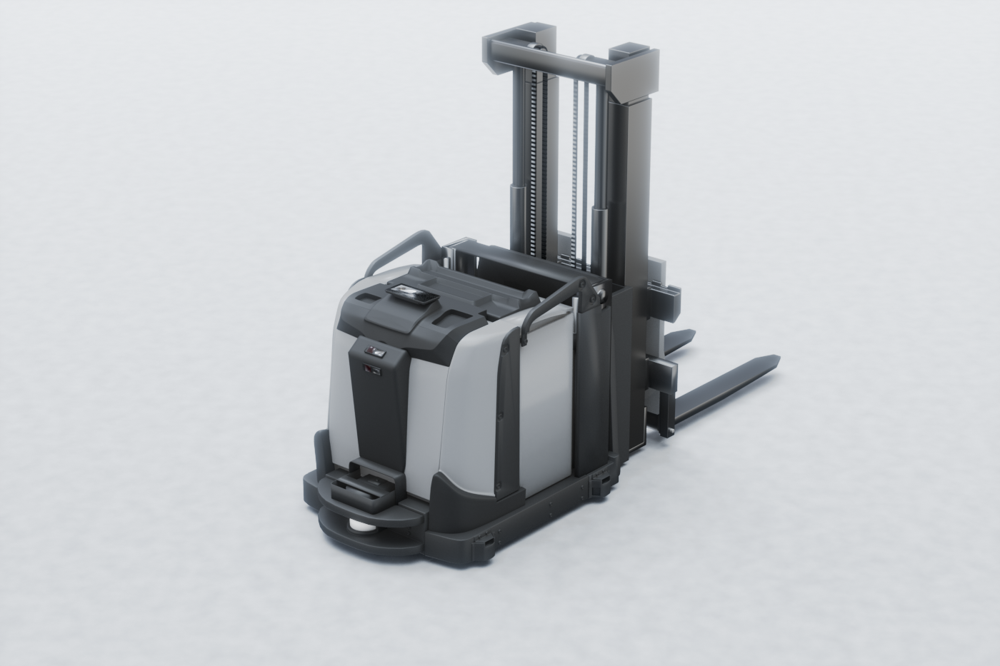
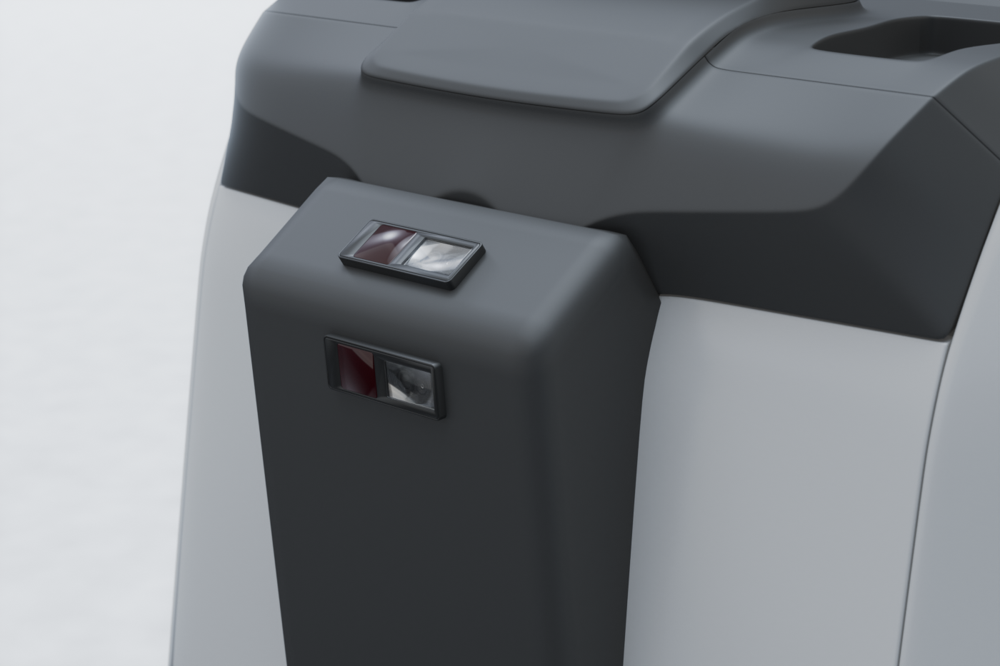

Camera mounting for ODS
Highlights
Review the general mounting instructions to comply with heat dissipation guidelines and clearance area requirements.
Generally, we recommend mounting the lowest camera at a height in the range of 250 to 700 mm from the ground.
Additionally, at least one of the active cameras should have the floor in its field of view, with visible floor up to 1 m, to allow for optimal performance in motion.
The positioning of the cameras on the AGV has a great impact on the performance of ODS. When defining the mounting position one or several cameras in this context, multiple things have to be taken into account.
First, review the general mounting instructions to ensure that the heat dissipation and clearance area guidelines are respected.
Then, there are a couple additional things to take into account specifically for ODS cameras.
Mounting position
Mounting height recommendations
Mounting height is important for all cameras, but it is especially critical for cameras that will be used to detect small objects on the floor.
The amount of light reflected from a surface in a diffuse reflection depends on the angle of incidence. The higher the angle of incidence, the more light typically reaches the camera and the more robust the computed distance measurement. This means that, the more the camera is tilted towards the floor, the larger the angle of incidence on the floor plane, the more light is reflected from the floor back to the camera. This in turn leads to more robust distance measurements.
On the other hand, if the camera is too close to the ground, reflection artifacts can occur and negatively affect the measurement ranges.
Another aspect of mounting height is the distance from the camera to the object to be detected. If the camera is mounted on a vehicle at a height of 2 meters, it is already 2 meters away from any object on the ground. While this may be a good mounting position to detect cantilevered objects that might collide with the top of the vehicle, it would significantly reduce the ability to detect the ground and small objects on the ground.
With these three considerations in mind, we recommend that the lowest cameras be mounted within a range of 250mm to 700mm (vertically) from the floor, and possibly tilted down up to 20 degrees. This is a good compromise to maximize the angle of incidence of the light while ensuring that the camera is not too far from the potential object on the ground and is not overly affected by artifacts.
For cameras that are only used to detect cantilevered objects and are not expected to segment small objects from the ground, the mounting requirements are relaxed and the camera can be mounted higher and pointed upward.
Examples
Below are two examples of mounting positions for ODS.
The first example shows a typical AMR platform, with one camera on each side. In this example, each camera is an O3R225, which has a wide opening angle and minimizes the blind spots around the vehicle. The four cameras create 3D obstacle awareness around the vehicle. 
All cameras are mounted at 30 cm above the ground plane, and are facing straight out, perpendicular to the side on which they are mounted.
 |
 |
The second example shows a typical fork truck, where two cameras are mounted on the front of the vehicle. Due to the size of the vehicle, two cameras are needed to minimize blind spots in the vertical axis. The lower camera is an O3R222, which is the narrow field of view camera. It is tilted down and is used to detect small objects on the floor at longer distances. The upper camera is an O3R225, which is the wide field of view camera. It is tilted up and is used to detect overhanging obstacles that could damage the top part of the vehicle. Both cameras are mounted at around 70 cm height.
 |
 |
Note
These images are intended as examples only and do not represent an actual at-scale model.
Visual odometry
Visual odometry is used in ODS along with IMU data to calculate the ego motion (linear velocity, angular velocity) of the vehicle. For a fully functional system, the visual odometry information needs to be available for at least one active camera at all times. Typically, visual odometry requires that pixels associated with the ground be visible up to about 1 meter under typical driving conditions.
This may require angling the camera down to see the ground in front of or to the side of the vehicle.
Clearance area
It is worth repeating that special attention should be paid to the clearance requirements for each camera. Any object obstructing the field of view or the clearance area will have a noticeable negative impact on ODS performance.
Refer to the clearance area guidelines.
Dead zones
Depending on the mounting position, dead zones may exist. ODS does not retain a memory of objects that have disappeared from the field of view into a dead zone. It is important to take this into account and define a strategy to either cover the dead zones with additional cameras, or to incorporate these dead zones into the effective breaking distance calculation.